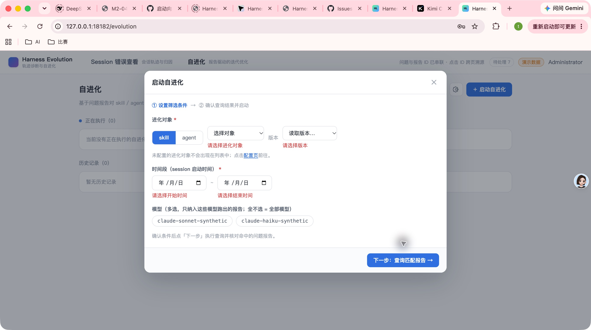
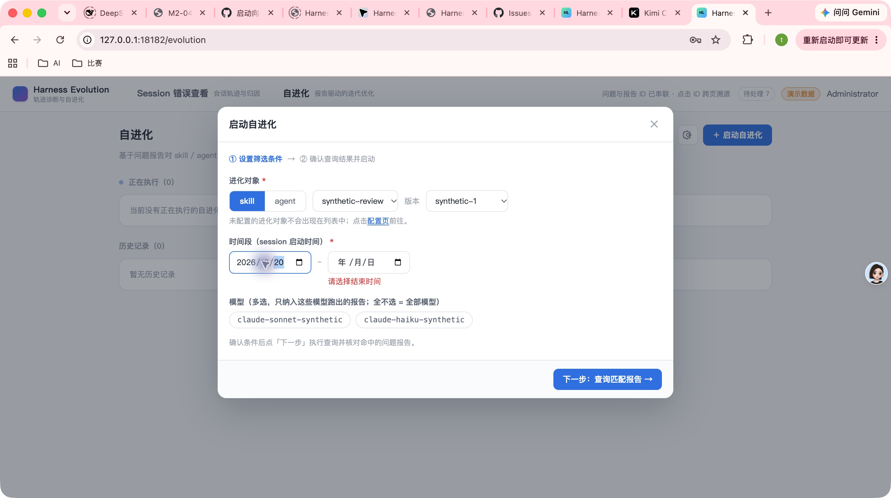
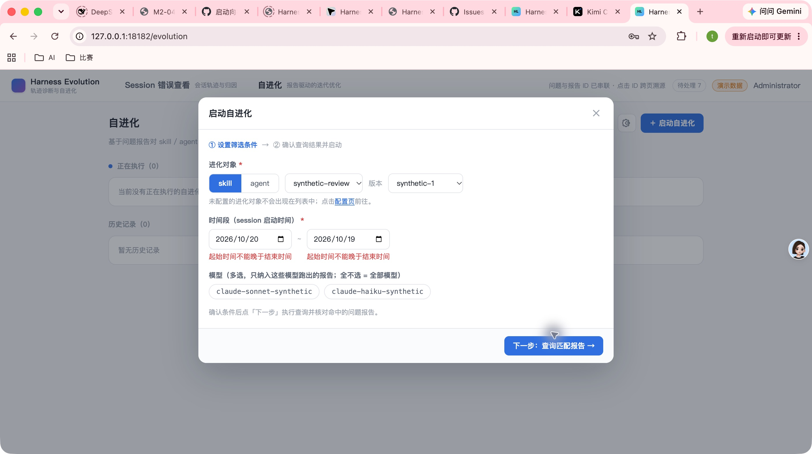
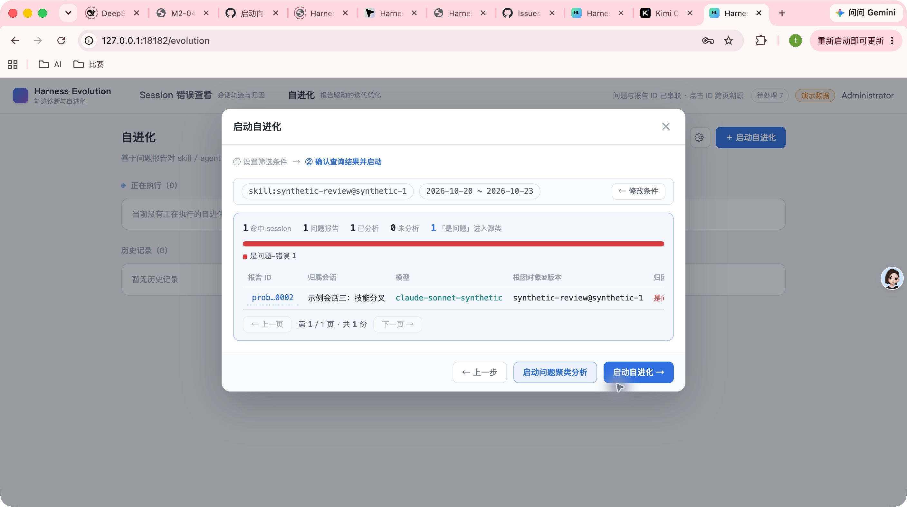
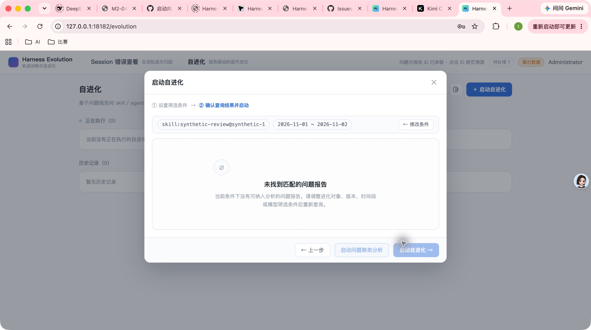

- Repository
- harness-evolution
- Branch
- feat/161-wizard-validation-empty-state
- Commit
- ece5f26a6349ee17e651f5fbe8845b517bcbf6e2
- Pull Request
- #170
- Issue
- #161
- Environment
- Temporary SQLite data directory; deterministic E2E API; Vite Web
- Fixture
- m2 synthetic corpus, 2026-10-20 through 2026-10-23
- Credentials
- <redacted>
INTEGRATION SMOKE
Issue #161 向导校验与空命中 GUI Smoke
在临时 SQLite fixture 环境中，通过 Chrome 真实操作 PR #170 对应提交，验证向导 Step1 的恒可点按钮、控件级校验、区间倒挂反馈、正常命中、真实 409 空命中与恢复查询。未发现需要修复的产品缺陷。
7Smoke scenarios
6Automated GUI pass
1Manual observation
0Defects found
Environment and Artifact
2026-10-30 · macOS · Google Chrome · PR #170 · commit ece5f26Scenario Matrix
6 pass · 1 manual| # | Scenario | Result | Detail | Evidence |
|---|---|---|---|---|
| 01 | 空表单点击下一步 | PASS | 按钮无禁用态；对象、版本、开始时间和结束时间分别标红，红字位于对应控件正下方；页面停留在 Step1，未出现查询错误提示。 | screenshots/01-empty-form-errors.jpg |
| 02 | 修改单个缺失字段 | PASS | 完成开始日期后，仅开始时间错误消失，结束时间错误保留。对象选择会按产品设计级联默认版本，因此未把该级联用作单字段清错样本。 | screenshots/02-start-date-clears-only-own-error.jpg |
| 03 | 时间区间倒挂 | PASS | 开始 2026-10-20、结束 2026-10-19 时，两个日期框标红，且各自下方显示“起始时间不能晚于结束时间”。 | screenshots/03-inverted-range-errors.jpg |
| 04 | Fixture 覆盖范围命中 | PASS | 2026-10-20 至 2026-10-23 查询进入 Step2，保留条件摘要，显示 1 hit、1 problem report，并启用两个启动出口。 | screenshots/04-normal-range-hits.jpg |
| 05 | Fixture 外真实 409 空命中 | PASS | 2026-11-01 至 2026-11-02 触发真实 NO_PROBES_MATCHED；进入 Step2 空态，标题与调整条件引导正确，聚类和自进化出口禁用。 | screenshots/05-real-empty-state.jpg |
| 06 | 空态后恢复命中 | PASS | 通过条件摘要条中的“← 修改条件”返回，改回 2026-10-20 至 2026-10-23 后重新查询，Step2 恢复同一命中结果。 | screenshots/06-recovered-hits.jpg |
| 07 | 控制台与布局观察 | MANUAL | Chrome DevTools 未附加到既有浏览器会话；全程未出现错误遮罩、明显布局破坏或渲染异常。Vite/API 会话无错误输出。 | screenshots/06-recovered-hits.jpg |
Issues and Observations
No defects foundNo defects were found.
Evidence
6 screenshots




Automated Coverage Assessment
3 areas reviewed| Area | Coverage | Conclusion | Recommendation |
|---|---|---|---|
| Step1 validation | UT + E2E + GUI | Unit and browser E2E already cover field errors, clearing, and no query behavior. | Keep GUI smoke for milestone verification. |
| Empty-hit mapping | UT + E2E + GUI | Real 409 NO_PROBES_MATCHED mapping and disabled exits verified end to end. | Keep regression coverage. |
| Browser console | Manual GUI | DevTools was not attached to the existing Chrome session. | Use E2E browser violation collection for deterministic console checks. |
Conclusion
No product defects foundPR #170 的目标行为在真实浏览器 smoke 中全部通过；本次无需新增检视意见或修复提交。
- No repository code changes were required by this smoke.
- Temporary API/Web processes should be stopped after report delivery.
- Report artifacts can be delivered separately if desired.
Generated from real Chrome interaction evidence; no generated HTML was hand-edited.